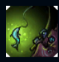
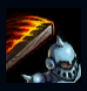
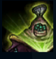
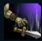
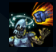

Jax
| Jax Grandmasters At Arms | |
|---|---|
| Release date | 21.02.2009 |
| Class | Skirmisher |
| Positions | Top |
| Resource | Mana |
| Range type | Melee |
| Adaptive type | Physical |
| Base statistics | |||
| Health | 593 – 2018 | Mana | 380-1438 |
| Health regen. | 6.5 – 16.7 |
Mana regen. | 7.5-16.85 |
| Armor | 38 – 70 | Attack damage | 52 – 99.6 |
| Magic resist. | 30 – 38.5 | Crit. damage | 175% |
| Move. speed | 315 | Attack range | 550 |
Neîntrecut în mânuirea armelor neobișnuite și în arta sarcasmului, Jax este ultimul maestru al armelor din Icathia. Mânat de o mândrie fatidică, poporul lui a dezlănțuit Vidul și a distrus aproape întregul ținut, așa că Jax și ceilalți icathieni au jurat să apere puținul care le-a mai rămas. Acum, magia devine din ce în ce mai prezentă în lume, iar amenințarea latentă pare să se trezească din nou, ceea ce-l determină pe Jax să călătorească prin Valoran, mânuind ultima lumină a Icathiei și testând toți războinicii pe care-i întâlnește în cale pentru a vedea dacă există vreunul capabil să lupte alături de el. |  |
ASALT NEÎNDURĂTOR Atacurile de bază consecutive ale lui Jax îi cresc continuu viteza de atac. |
||
|---|---|---|---|---|
 |
VÂRTEJ Creând o modificare localizată a presiunii și temperaturii, Jax poate crea o mică furtună care va crește cu timpul. Ea poate activa vraja din nou pentru a dezlănțui furtuna. După ce este dezlănțuită, furtuna va zbura în direcția în care este lansată, provocând daune și aruncând inamicii în sus. |
|||
 |
LOVITURĂ DIN SALT Jax sare către o unitate. Dacă este o unitate inamică, Jax o lovește cu arma. |
|||
|  |
OCHIUL FURTUNII Jax invocă un ciclon defensiv care apără campionul sau turnul aliat de daune și îi crește daunele din atac. |
|||
 |
ABILITARE Jax își încarcă arma cu energie, astfel încât următorul său atac să provoace daune suplimentare. |